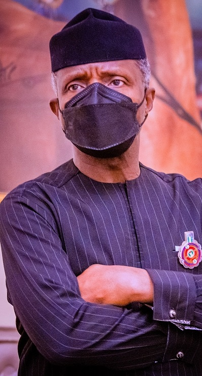

An Opportunity For All
NIGERIANS
With working families struggling and our economy under threat, we can't just wait around for progressive chnage. The time has come for us to act.
WATCH ON YOUTUBEWith working families struggling and our economy under threat, we can't just wait around for progressive chnage. The time has come for us to act.
WATCH ON YOUTUBE
Born into the family of Opeoluwa Osinbajo on the 8th On the 8th of March 1957, Yemi Osinbajo was born to Opeoluwa and Olubisi Osinbajo at Creek hospital in Lagos, Nigeria. He had his primary school education at Corona Primary School, Lagos, and then proceeded to Igbobi College, Lagos, for his secondary school education from 1969 to 1975. As a student of Igbobi College, he won the following awards: The State Merit Award (1971); the School Prize for English Oratory (1972); Adeoba Prize for English Oratory (1972-1975); Elias Prize for Best Performance in History (WASC, 1973); School Prize for Literature (HSC, 1975); and African Statesman Intercollegiate Best Speaker’s Prize (1974).